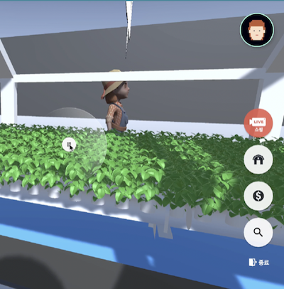
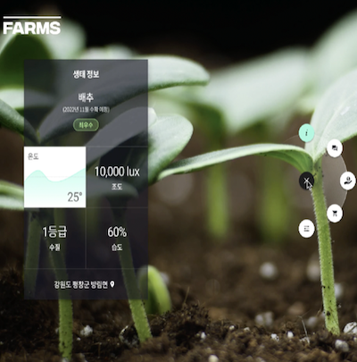
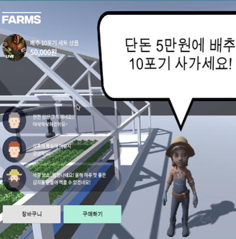
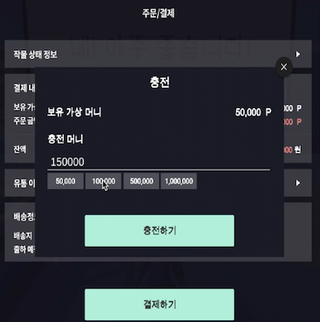

|  |
A function to Move and Jump You can move by pressing the arrow keys, and you can also jump by pressing the space bar. |
|  |
A function to Load Information about a Plant If you click a button after approaching a plant within the metaverse environment, you can view various information including the actual appearance of the plant. |
|  |
A function to Access Shop You can access the farmer's shop to view and purchase crops currently on sale. |
|  |
A function to Purchase Plants You can purchase crops with the cash you have. If you run out of cash, you can recharge it. |